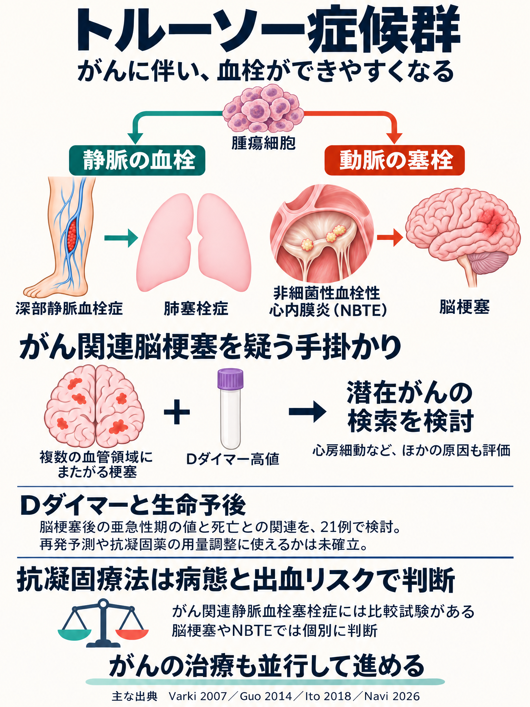

<!doctype html><html lang="ja"><meta charset="utf-8"><meta name="viewport" content="width=device-width,initial-scale=1"><title>トルーソー（Trousseau）症候群：図の拡大</title><style>body{font-family:Meiryo,sans-serif;margin:0;padding:16px;line-height:1.7;color:#17374c}main{max-width:1100px;margin:auto}img{max-width:100%;height:auto}a{color:#195b87}h1{font-size:1.35em}</style><main><h1>トルーソー（Trousseau）症候群</h1><p>画像をクリック／タップすると原寸（1536×2048）で開きます。</p><a href="overview.png" target="_blank" rel="noopener noreferrer" title="画像を原寸で開く"></a><p><a href="https://blog.ichisouzo-lab.com/entry/2025/05/21/081443">記事に戻る</a>（数値と出典は記事本文の参考文献を参照してください）</p></main></html>
